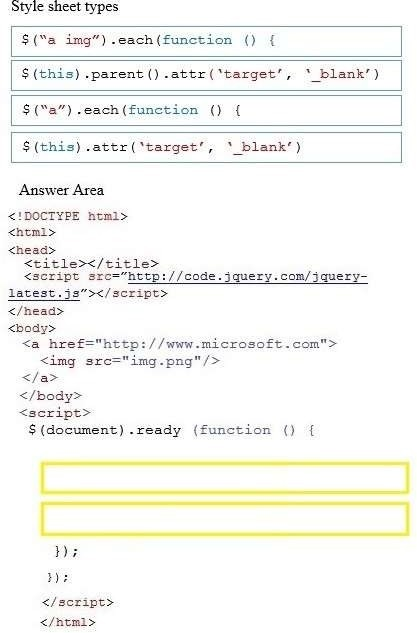

|
DRAG DROP
You are developing a website that has many web pages with hyperlinks to other
sites.
You need to ensure that if a hyperlink contains an image, the linked web page opens in a
new window.
Which jQuery code segment or segments should you use? (To answer, drag the appropriate
line of code to the correct location. Each line of code may be used once, more than once, or not at all. You may
need to drag the split bar between panes or scroll to view content.)
Select and Place:

Correct Answer:
Section: Volume A
Explanation
Explanation/Reference:
Explanation:
* a img
All elements that are descendants of an element.
* (this).parent
This is the element and is the parent.
Explicación
Este ejercicio esta relacionado con tres definiciones relacionadas con métodos:
-
1. El método .each(function) en la expresión ().each(function):
El método .each() itera sobre un objeto jQuery, ejecutando una función para cada elemento coincidente.
El método .each() está diseñado para hacer que las construcciones de bucles DOM sean concisas y menos propensas
a errores. Cuando se llama, itera sobre los elementos DOM que forman parte del objeto jQuery. Cada vez que se
ejecuta la devolución de llamada, se pasa la iteración del bucle actual, comenzando desde 0. Más importante aún,
la devolución de llamada se activa en el contexto del elemento DOM actual, por lo que la palabra clave this se
refiere al elemento.
-
2. El método .parent([selector]). en la expresión $(this).parent().:
El método .parent() obtiene el padre de cada elemento en el conjunto actual de elementos coincidentes,
opcionalmente filtrado por un selector.
Dado un objeto jQuery que representa un conjunto de elementos DOM, el método parent()
atraviesa al padre inmediato de cada uno de estos elementos en el árbol DOM y construye un nuevo objeto
jQuery a partir de los elementos coincidentes.
Selector - Una cadena que contiene una expresión de selector para hacer coincidir los
elementos.
-
3. El método .attr(attributeName) en la expresión .attr('target', '_blank'):
El método .attr() obtiene el valor de un atributo para el primer elemento del conjunto de elementos
coincidentes o emparejado con uno o más atributos para cada elemento coincidente.
El método .attr() obtiene el valor del atributo solo para el primer elemento del conjunto coincidente. Para
obtener el valor de cada elemento individualmente, use una construcción de bucle como el método .each() o
.map() de jQuery.
Ver o ir a: https://api.jquery.com/attr/ para explorar todos los parámetros que toma el método
ya que hay los que coinciden con los parámetros de este ejercicio.
Con las definiciones anteriores podemos deducir que lo primero que tenemos que hacer es hacer un parser sobre todo
el DOM identificando todos los elementos anchor "<a> </a>" y de ahí ver si entre ellos hay elementos
que su valor entre las etiquetas anchor "<a> valor </a>" hay una imagen "<img>" que al hacerla
clic esta abre el vínculo escrito en "href" en una página nueva. Entre las opciones expuestas primero tenemos que escoger
la función .each() y el método .parent() , es obvio que la opción es .each(). Por eso las opciones 2da y 4ta
no son parte de la primera línea de código.
La segunda linea de código que se busca es una función que se ejecuta para cada .each(). Aquí tenemos que buscar el
atributo de la etiqueta que buscamos, en esta caso el anchor "<a> valor </a>" y para ser más
concreto su child dentro que es "<img>".
De las opciones restantes la única opción es la segunda. ESto se explica ya que esta opción se refiere al .parent() que este
caso es el "this" que llama a este método. Como el que llama a este método es ('a img') se obtendría el anchor y la
imagen correspondiente para la cual se modifica el atributo con la expresión "attr('target','_blank')
que son las condiciones del ejercicio.
Un ejemplo claro del target = "_blank" se puede ver en: https://www.w3schools.com/tags/tryit.asp?filename=tryhtml_a_target
Respuesta:
Con todo lo expuesto anteriormente el order el orden de las líneas de código de la función a definir sería
Para visualizar el script que da el resultado correcto ver el código fuente de esta página.
El ejercicio sugiere que cuando se haga clic sobre la imagen encapsulada en el anchor "<a> valor </a>"
la página que abrirá es la "href='www.microsoft.com'" en el navegador en una nueva pestaña o nueva página.
Mostrando la respuesta al ejercicio de manera gráfica podemos ver:
Fuentes:
https://api.jquery.com/each/
https://www.w3schools.com/jquery/traversing_parents.asp
https://api.jquery.com/attr/
|